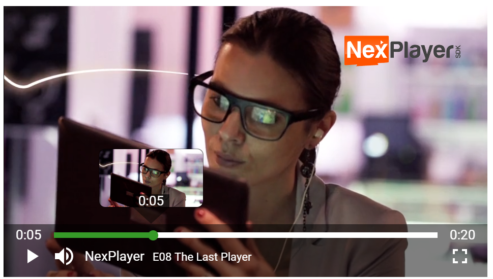

Advanced Usage
NexPlayer™ offers more advanced options to control the playback. This section contains several examples of how to use these features.
Security
Digital rights management (DRM) is a set of access control technologies for restricting the use of proprietary hardware and copyrighted works.
Most of the DRMs available won't work without using HTTPS with a certificate. For development purposes, a tool like ngrok can be used to test DRM-protected links.
NexPlayer™ supports several DRM technologies:
Widevine
A DRM powered by Google, available on Chrome and Firefox (on Android and desktop), Opera, MS Edge and IE (on desktop). It can be set by entering the information into the DRM array:
var nexDRMInformationWidevine = {
NexDRMType:'com.widevine.alpha',
NexDRMKey: 'DRM key URL',
NexHeaders:[{FieldName: 'Optional field name', //Optional
FiledValue: 'Optional field value'}] //Optional
};
nexplayer.Setup({
key: 'REPLACE THIS WITH YOUR CUSTOMER KEY',
div: document.getElementById('player'),
src: 'VIDEO URL',
drm: [nexDRMInformationWidevine]
});
Please note that the HTTP headers (NexHeaders) are optional, and might depend on the implementation of the Widevine server used.
PlayReady
A DRM powered by Microsoft, available on Edge and Internet Explorer (on Windows). It can be used by entering the information into the DRM array:
var nexDRMInformationPlayReady = {
NexDRMType:'com.microsoft.playready',
NexDRMKey: 'DRM key URL',
NexHeaders:[{FieldName: 'Optional field name', //Optional
FiledValue: 'Optional field value'}]}; //Optional
nexplayer.Setup({
key: 'REPLACE THIS WITH YOUR CUSTOMER KEY',
div: document.getElementById('player'),
src: 'VIDEO URL',
drm: [nexDRMInformationPlayReady]
});
Please note that the HTTP headers (NexHeaders) are optional, and might depend on the implementation of the PlayReady server used.
CENC
The Common Encryption Scheme (CENC) specifies the standard to enable decryption of the same file using different DRM systems. It allows the same CENC-encrypted content to be decrypted and played by any client device that interfaces with a DRM system that can serve the associated CENC key information.
For example, Widevine and PlayReady can be used with the same DASH manifest and chunk files:
// Widevine
var nexDRMInformationWidevine = {NexDRMType:'com.widevine.alpha',
NexDRMKey: 'DRM key URL',
NexHeaders:[{FieldName: 'Optional field name', //Optional
FiledValue: 'Optional field value'}]}; //Optional
// PlayReady
var nexDRMInformationPlayReady = {NexDRMType:'com.microsoft.playready',
NexDRMKey: 'DRM key URL',
NexHeaders:[{FieldName: 'Optional field name', //Optional
FiledValue: 'Optional field value'}]}; //Optional
nexplayer.Setup({
key: 'REPLACE THIS WITH YOUR CUSTOMER KEY',
div: document.getElementById('player'),
src: 'VIDEO URL',
drm: [nexDRMInformationWidevine, nexDRMInformationPlayReady]
});
Please note that the HTTP headers (NexHeaders) are optional, and might depend on the implementation of the DRM used.
FairPlay
A DRM powered by Apple, available on Safari (on macOS and iOS). When using FairPlay the license must be manually requested, adapting it to the specified FairPlay server implementation. It can be used by entering the information into the DRM array:
// First get the player instance to call the necessary methods when the license is requested
var player = null;
// FairPlay Utility
function base64EncodeUint8Array(input) {
var keyStr = "ABCDEFGHIJKLMNOPQRSTUVWXYZabcdefghijklmnopqrstuvwxyz0123456789+/=";
var output = "";
var chr1, chr2, chr3, enc1, enc2, enc3, enc4;
var i = 0;
while (i < input.length) {
chr1 = input[i++];
chr2 = i < input.length ? input[i++] : Number.NaN; // Not sure if the index
chr3 = i < input.length ? input[i++] : Number.NaN; // checks are needed here
enc1 = chr1 >> 2;
enc2 = ((chr1 & 3) << 4) | (chr2 >> 4);
enc3 = ((chr2 & 15) << 2) | (chr3 >> 6);
enc4 = chr3 & 63;
if (isNaN(chr2)) {
enc3 = enc4 = 64;
} else if (isNaN(chr3)) {
enc4 = 64;
}
output += keyStr.charAt(enc1) + keyStr.charAt(enc2) +
keyStr.charAt(enc3) + keyStr.charAt(enc4);
}
return output;
}
// Request the license at the NexPlayer callback
function licenseRequestReady (event) {
var session = event.target;
var message = event.message;
var request = new XMLHttpRequest();
var sessionId = event.sessionId;
request.responseType = 'text';
request.session = session;
request.addEventListener('load', player.FairPlayNexLicenseRequestLoaded.bind(player), false);
request.addEventListener('error', player.FairPlayNexLicenseRequestFailed.bind(player), false);
var params = 'spc='+base64EncodeUint8Array(message)+'&assetId='+encodeURIComponent(session.contentId);
request.open('POST', 'URL for the SPC sever (license server)', true); // serverProcessSPCPath
request.setRequestHeader("Content-type", "application/x-www-form-urlencoded");
request.setRequestHeader("dt-custom-data", "Optional license token");
request.send(params);
}
var callBackWithPlayers = function (nexplayerInstance, videoElement) {
player = nexplayerInstance;
}
var nexDRMInformationFairPlay = {NexDRMType:'com.apple.fps.1_0', NexDRMKey: 'DRM key URL (certificate URL)', NexCallback: licenseRequestReady};
nexplayer.Setup({
key: 'REPLACE THIS WITH YOUR CUSTOMER KEY',
div: document.getElementById('player'),
src: 'https://s3.amazonaws.com/shift72-temp/hls_fps_bento4_sintel/master.m3u8',
callbacksForPlayer: callBackWithPlayers,
drm: [nexDRMInformationFairPlay]
});
Please note that the HTTP headers (NexHeaders) are optional, and might depend on the implementation of the FairPlay server used.
FairPlay is supported with HLS.
AES
NexPlayer™ supports HLS content encrypted with the AES-128 algorithm. If the key is transported inside the HLS manifest itself, it will automatically work without any modification on the developer's side.
Please note that this method is not as secure as other DRMs.
AES is supported with HLS.
Custom Headers
Custom headers can be included in each HTTP petition, even without the use of DRM, to include extra information for the server.
This information can be passed in the DRM array:
drmCustomHeaders = {NexHeaders:[{FieldName: 'Optional field name', FiledValue: 'Optional field value'}]};
nexplayer.Setup({
key: 'REPLACE THIS WITH YOUR CUSTOMER KEY',
div: document.getElementById('player'),
src: 'VIDEO URL',
drm: [drmCustomHeaders]
});
Please note that this method is not as secure as other DRMs.
Custom headers are supported with HLS and DASH.
Ads
NexPlayer supports the VAST, VPAID, and VMAP ad formats.
You can insert any pre/mid/post roll ad by setting up the ad links as shown below:
nexplayer.Setup({
key: 'REPLACE THIS WITH YOUR CUSTOMER KEY',
div: document.getElementById('player'),
src: 'VIDEO URL',
vast: 'VAST / VPAID / VMAP link'
});
Sample VAST links can be found on the Google website.
360 Player and VR Mode
This feature allows the player to play videos with equirectangular, cubemap or topdown format. The 360 feature can be activated by adding the type_360 option:
{
div: document.getElementById('player'), // Mandatory
src: 'URL video', // Mandatory
type_360: 'equirectangular'
}
Please note that the default format is 'equirectangular'. To switch the format, simply change the value of type_360 to 'cubemap' or 'topdown'.
Mute
This feature tells the player whether to start playback with the volume muted or not. This can be configured in the player by adding the mutedAtStart option:
{
div: document.getElementById('player'), // Mandatory
src: 'URL video', // Mandatory
mutedAtStart: true
}
Please note that the default value of the mutedAtStart parameter is false, so the player will start unmuted if mutedAtStart is not set to true.
Low Latency
This feature enables low latency for live streams. This can be configured in the player by adding the lowLatency option. You can also choose the desired latency:
{
div: document.getElementById('player'), // Mandatory
src: 'URL video', // Mandatory
lowLatency: true,// toggle on/off low latency apis
lowLatencyLiveDelay: 3.2 // The desired latency to maintain
}
Please note that the default value of the lowLatency parameter is false, so the player will start without low latency if lowLatency is not set to true.
Please note that the default value of the lowLatencyLiveDelay parameter will adjust the latency depending on the network conditions.
Auto Play
This feature enables/disables autoplay. This can be configured in the player by adding the autoplay option:
{
div: document.getElementById('player'), // Mandatory
src: 'URL video', // Mandatory
autoplay: false
}
Please note that the default value of the autoplay parameter is true, so the player will start without any user action.
Casting
Cast technology allows you to stream your media to any compatible receiver devices.
AirPlay
AirPlay displays your video and audio streams directly to your Apple TV. You can enable the AirPlay option as shown below:
nexplayer.Setup({
key: 'REPLACE THIS WITH YOUR CUSTOMER KEY',
div: document.getElementById('player'),
src: 'VIDEO URL',
cast: {}
});
Chromecast
Chromecast displays your video and audio streams directly onto any TV connected to you Chromecast receptor. You can enable the Chromecast option as shown below:
nexplayer.Setup({
key: 'REPLACE THIS WITH YOUR CUSTOMER KEY',
div: document.getElementById('player'),
src: 'VIDEO URL',
cast: {}
});
The AirPlay and Chromecast cast options don't need input parameters. Just remove the cast option to disable these features.
Please note that AirPlay only works on Safari.
ID3 Tags
NexPlayer™ supports timed metadata for HLS and DASH content. The information is available in the TextTrack array of the video element.
var callBackWithPlayers = function (nexplayerInstance, videoElement) {
videoElement.addEventListener('loadedmetadata', function(event) {
if (videoElement.textTracks) showTimedMetadata(videoElement);
});
};
nexplayer.Setup({
key: 'REPLACE THIS WITH YOUR CUSTOMER KEY',
div: document.getElementById('player'),
src: 'VIDEO URL',
callbacksForPlayer: callBackWithPlayers
});
var showTimedMetadata = function(videoElement) {
videoElement.textTracks[1].addEventListener('cuechange', function (cueChangeEvent) {
var activeCues = cueChangeEvent.currentTarget.activeCues[0];
if (activeCues) console.log(activeCues['value']['data']);
});
};
Access to the Player Instances
An instance of the player and the video element will be accessible once NexPlayer™ is configured and loaded. The 'callbacksForPlayer' option should be set. The defined function will be called when the player is considered ready. Once the callback is received, the playback can be controlled with the NexPlayer™ instance and the associated video element.
var callBackWithPlayers = function (nexplayerInstance, videoElement) {
// Eg. seeking to 30 sec from outside the predefined UI could be done like this
nexplayerInstance.seek(30);
}
nexplayer.Setup({
key: 'REPLACE THIS WITH YOUR CUSTOMER KEY',
div: document.getElementById('player'),
src: 'VIDEO URL',
callbacksForPlayer: callBackWithPlayers
});
We strongly recommend calling the APIs after the player is ready.
Custom Actions
Advanced actions can be performed with a player instance. For the full action list, check NexPlayer API.
Adaptive Bitrate (ABR)
HLS and DASH streams contain several video bitrates in order to adjust the quality based on the network conditions. Changes in bitrate are done automatically when ABR (Adaptive Bitrate) is enabled (default behavior).
The currently selected track can be obtained with the method getCurrentTrack of NexPlayer™. It returns all the track information.
nexplayerInstance.getCurrentTrack();
All the available tracks can be obtained with the method getTracks of NexPlayer™.
nexplayerInstance.getTracks();
Setting a fixed track can be achieved by calling the method setTrack of NexPlayer™.
// Sets the first track as the used one
nexplayerInstance.setTrack(nexplayerInstance.getTracks()[0].id);
A change in the current track can be detected with the NexPlayer™ callbacks.
Tracks
Subtitles
Information about the available subtitles can be retrieved with the textTracks attribute of the video element.
videoElement.textTracks;
The active subtitles mode is set to showing. The currently selected subtitle can also be selected by setting the mode to showing. A subtitle can be deselected by setting the mode to hidden.
videoElement.textTracks[0].mode = "showing";
Audio
Information about the current audio can be retrieved with the method getCurrentAudioStream of NexPlayer™. It returns all the audio information for that stream.
nexplayerInstance.getCurrentAudioStream();
All the available audio tracks can be retrieved with the method getAudioStreams of NexPlayer™.
nexplayerInstance.getAudioStreams();
The currently used audio stream can be set with the method setAudioStream of NexPlayer™, passing one of the IDs of getAudioStreams.
// Sets the first audio stream as the used one
nexplayerInstance.setAudioStream(nexplayerInstance.getAudioStreams()[0].id);
Seek
Seeking to a certain time can be achieved by calling the method seek of the NexPlayer™ and passing the desired number of seconds.
nexplayerInstance.seek(30);
Thumbnails
NexPlayer™ supports thumbnail previews. Thumbnails are individual frame images of the video that are loaded when a viewer hovers over the seekbar. It permits a quick snapshot of the video. The thumbnails can be loaded in a static or dynamic way.

Static Thumbnails
The player needs two files:
- the Thumbnail Sprite, which contains multiple thumbnails stitched together into a single image

- a .vtt file that specifies:
- the range that the thumbnail represents
- the coordinates and size (both in pixels) corresponding to the position in the previous image file
An example of the .vtt file could be:
WEBVTT
00:00:00.000 --> 00:00:03.000
/assets/thumb_image.jpg#xywh=0,0,160,120
00:00:03.000 --> 00:00:08.000
/assets/thumb_image.jpg#xywh=162,0,160,120
For development purposes, the npm package thumbnails-webvtt can be used to generate the thumbnails sprite and the .vtt file for a specific video.
The player can be configured by adding the staticThumbnailsImage and staticThumbnailsVTT options:
{
div: document.getElementById('player'), // Mandatory
src: 'URL video', // Mandatory
staticThumbnailsImage: 'IMAGE SPRITE URL',
staticThumbnailsVTT: 'VTT URL'
}
Please note that the time range specified in the .vtt file needs to be in (HH:)MM:SS.MMM format. Only this exact notation will be parsed.
Dynamic Thumbnails
This feature permits the player to dynamically download the frames from the lowest track of the video.
The player can be configured by adding the useDynamicThumbnails option:
{
div: document.getElementById('player'), // Mandatory
src: 'URL video', // Mandatory
useDynamicThumbnails: true
}
Callbacks
References to the player instances are needed to register callbacks.
There are two types of emitted events that can be listened to.
Video Element Events
The video element emits the basic event, such as a change of the state of the video (pause/play/buffering), or informs that the current time of the video has changed.
The method addEventListener of the video element needs to be called with any of the available media events.
Some of the most important events are "playing", "pause", "waiting", and "timeupdate".
videoElement.addEventListener("timeupdate", function() { console.log("The video playback has advanced to: "+videoElement.currentTime+", with the duration: "+videoElement.duration) }, true);
Custom Events
We also have custom events to handle some different kind of video events.
videoElement.addEventListener("customEvent", function() { console.log("Custom Event") });
fakeFSend:
Sent when the video exits the fake full screen (useful in case of not using native fs).
audioChange:
Sent when the audio of the video changes (language change).
subChange:
Sent when the subtitles of the video changes (language change).
NexPlayer™ Events
Advanced events such as a track change are available using the on method of NexPlayer.
nexplayerInstance.on(nexplayer.Player.NexEvent.Track_Change, function() { console.log("The current track has changed") });
Fullscreen IOS
If you want to avoid the fullscreen native player in IOS, you should define this 2 callbacks on the setup 'callbackFullscreenIn' and 'callbackFullscreenOut'
const callbackwithFullscreenIn = function(){
document.getElementById('player_container').className = 'player_containerfs';
}
const callbackwithFullscreenOut = function(){
document.getElementById('player_container').className = 'player_container';
}
nexplayer.Setup({
key: 'REPLACE THIS WITH YOUR CUSTOMER KEY',
div: document.getElementById('player'),
src: 'VIDEO URL',
callbackFullscreenIn: callbackwithFullscreenIn,
callbackFullscreenOut: callbackwithFullscreenOut
});
Please note that the code inside the callbacks its a sample, it can change depending the implementation.
Closing Container
If you want to reuse the same div for different videos, the container div must be unmounted properly.
nexplayer.UnMount(document.getElementById('player');
Supported Platforms
Online progressive download (MP4) is supported on any platform. The support for DASH and HLS, and associated DRMs, changes depending
on each browser and platform. The platforms listed below are being continuously tested.
DASH
Browser
Platform
DRM
Chrome
Windows, Linux, macOS, Android
Widevine, Custom Headers
Safari
macOS
✘
Firefox
Windows, Linux, macOS, Android
Widevine, Custom Headers
Opera
Windows, Linux, macOS
Widevine, Custom Headers
Edge
Windows
PlayReady, Custom Headers
IE
Windows1
PlayReady, Custom Headers
1. IE 11+ is required ↩
HLS
Browser
Platform
DRM
Chrome
Windows, macOS, Android, iOS
AES, Custom Headers
Safari
macOS, iOS
FairPlay, AES, Custom Headers
Firefox
Windows, Linux, macOS, Android
AES, Custom Headers
Opera
Windows, Linux, macOS
AES, Custom Headers
Edge
Windows
AES, Custom Headers
IE
Windows2
AES, Custom Headers
2. IE 11+ is required ↩
Decreasing the Size of the Build
The nexplayer.js library is already minified, but to use even less space it's recommended to use gzip
on the server where the library will be hosted. gzip is supported on the vast majority of servers.
The hosted versions in our CDN use gzip.
Cross-Origin Resource Sharing (CORS)
Cross-Origin Resource Sharing (CORS) is a mechanism that uses additional HTTP headers to let a user agent gain permission to access
selected resources from a server on a different origin (domain) than the site currently in use.
This means that if a video is hosted in a different domain than the player, a header like Access-Control-Allow-Origin:
https://foo.mycompany.com should be included in the response in order for it not to be blocked by the browser for security reasons.
To allow all domains, set the header to Access-Control-Allow-Origin: *.
More information is available at MDN Web Docs.
Upgrading to a New Version
When using the latest release, upgrades will be applied automatically. When a specific version of the library is used, the URL
of the hosted library should be upgraded. If the library is hosted on a custom server, replacing nexplayer.js is necessary.
Every new release of NexPlayer™ is backwards compatible.